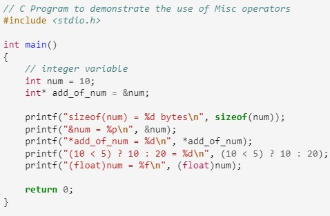
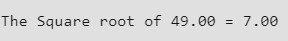

Control Statements
Basic Input and Output in C
C language has standard libraries that allow input and output in a program. The stdio.h or standard input output library in C that has methods for input and output.
scanf()
The scanf() method, in C, reads the value from the console as per the type specified and store it in the given address.
Syntax
printf()
The printf() method, in C, prints the value passed as the parameter to it, on the console screen.
Syntax
Operators in C
In C language, operators are symbols that represent operations to be performed on one or more operands. They are the basic components of the C programming. In this article, we will learn about all the built-in operators in C with examples.
An operator in C can be defined as the symbol that helps us to perform some specific mathematical, relational, bitwise, conditional, or logical computations on values and variables. The values and variables used with operators are called operands. So we can say that the operators are the symbols that perform operations on operands.
Types of Operators in C
C language provides a wide range of operators that can be classified into 6 types based on their functionality:
- Arithmetic Operators
- Relational Operators
- Logical Operators
- Bitwise Operators
- Assignment Operators
- Other Operators
Arithmetic Operators
The arithmetic operators are used to perform arithmetic/mathematical operations on operands.
Example
Output
Relational Operators in C
The relational operators in C are used for the comparison of the two operands. All these operators are binary operators that return true or false values as the result of comparison.
Example
Output
Here, 0 means false and 1 means true.
Logical Operator in C
Logical Operators are used to combine two or more conditions/constraints or to complement the evaluation of the original condition in consideration. The result of the operation of a logical operator is a Boolean value either true or false.
Example
Output
Bitwise Operators in C
The Bitwise operators are used to perform bit-level operations on the operands. The operators are first converted to bit-level and then the calculation is performed on the operands. Mathematical operations such as addition, subtraction, multiplication, etc. can be performed at the bit level for faster processing.
Example

Output
Assignment Operators in C
Assignment operators are used to assign value to a variable. The left side operand of the assignment operator is a variable and the right side operand of the assignment operator is a value. The value on the right side must be of the same data type as the variable on the left side otherwise the compiler will raise an error.
The assignment operators can be combined with some other operators in C to provide multiple operations using single operator. These operators are called compound operators.
Example
Output
Other Operators
Apart from the above operators, there are some other operators available in C used to perform some specific tasks. Some of them are discussed here:
- sizeof Operator
- Comma Operator ( , )
- Conditional Operator ( ? : )
- dot (.) and arrow (->) Operators
- Cast Operator
- addressof (&) and Dereference (*) Operators
Example
Output
C Functions
A function in C is a set of statements that when called perform some specific task. It is the basic building block of a C program that provides modularity and code reusability. The programming statements of a function are enclosed within { } braces, having certain meanings and performing certain operations. They are also called subroutines or procedures in other languages.
In this article, we will learn about functions, function definition. declaration, arguments and parameters, return values, and many more.
Syntax of Functions in C
The syntax of function can be divided into 3 aspects:
- Function Declaration
- Function Definition
- Function Calls
Function Declarations
In a function declaration, we must provide the function name, its return type, and the number and type of its parameters. A function declaration tells the compiler that there is a function with the given name defined somewhere else in the program.
Syntax
The parameter name is not mandatory while declaring functions. We can also declare the function without using the name of the data variables.
Example
Function Definition
The function definition consists of actual statements which are executed when the function is called (i.e. when the program control comes to the function).
A C function is generally defined and declared in a single step because the function definition always starts with the function declaration so we do not need to declare it explicitly. The below example serves as both a function definition and a declaration.
Syntax
Function Call
A function call is a statement that instructs the compiler to execute the function. We use the function name and parameters in the function call.
In the below example, the first sum function is called and 10,30 are passed to the sum function. After the function call sum of a and b is returned and control is also returned back to the main function of the program.
Example
Output
Types of Function
- Library Functions
- User Defined Functions
Library Function
A library function is also referred to as a “built-in function”. A compiler package already exists that contains these functions, each of which has a specific meaning and is included in the package. Built-in functions have the advantage of being directly usable without being defined, whereas user-defined functions must be declared and defined before being used.
Example

Output
User Defined Functions
Functions that the programmer creates are known as User-Defined functions or “tailor-made functions”. User-defined functions can be improved and modified according to the need of the programmer. Whenever we write a function that is case-specific and is not defined in any header file, we need to declare and define our own functions according to the syntax.
Example

Output
Advantages of Functions in C
- The function can reduce the repetition of the same statements in the program.
- The function makes code readable by providing modularity to our program.
- There is no fixed number of calling functions it can be called as many times as you want.
- The function reduces the size of the program.
- Once the function is declared you can just use it without thinking about the internal working of the function.
Disadvantages of Functions in C
- Cannot return multiple values.
- Memory and time overhead due to stack frame allocation and transfer of program control.